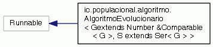
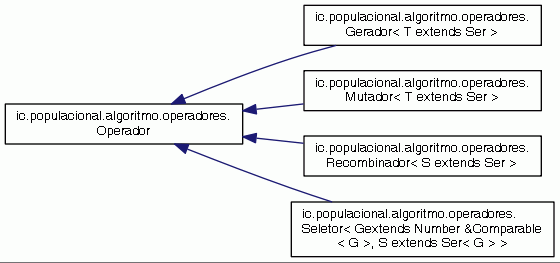
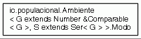
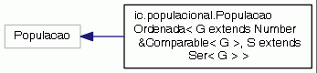
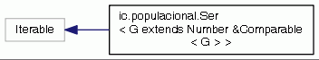
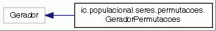
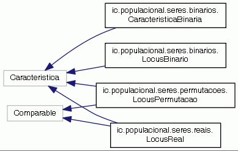
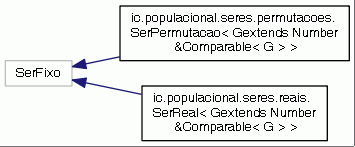

TCC
1.0
Página Principal
Páginas relacionadas
Pacotes
Classes
Arquivos
Lista de Componentes
Índice dos Componentes
Hierarquia de Classes
Componentes Membros
Todos
Classes
Namespaces
Arquivos
Funções
Variáveis
Páginas
Hierarquia de Classes
Vá para a Hierarquia de Classes (texto)








Gerado em Quarta, 25 de Junho de 2014 15:10:16 para TCC por
1.8.6


 1.8.6
1.8.6